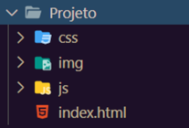
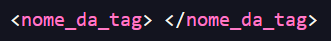
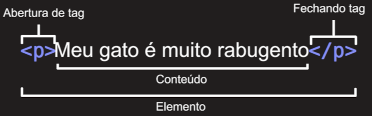
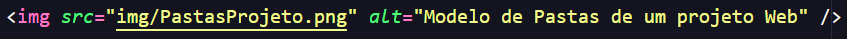
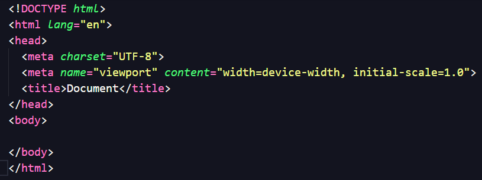
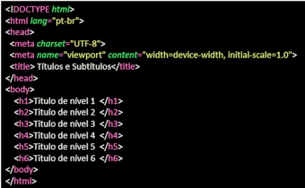
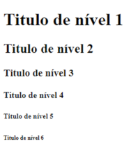
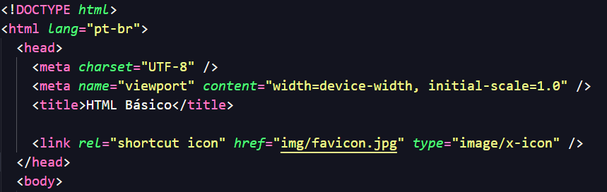
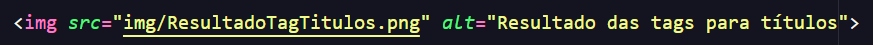
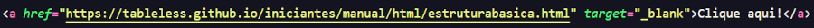

HTML Básico
Aqui está um resumo de todo o conteudo das aulas de HTML Básico.

Estrutura dos arquivos em um projeto Web
Para todo projeto de software existem algumas recomendações, ao construir um Web Site ou uma Aplicação Web vamos utilizar vários tipos de arquivos diferentes.
Nomes de arquivos e pastas dever ser escritos em letras minúsculas, sem espaços e sem caracteres especiais.
É recomendado que exista uma página inicial dentro de um arquivo chamado index.html.
Dentro da pasta do projeto é recomendado que sejam criadas mais algumas pastas com a finalidade de organizar os arquivos do projeto.

Documento HTML
A linguagem HTML (Hypertext Markup Language) tem o objetivo de formatar textos através de marcações especiais denominadas tags. Documentos HTML são arquivos de texto ASCII. Todos os arquivos devem possuir a extensão .html.
HTML não faz diferença entre letras minúsculas ou maiúsculas em suas marcações, mas recomenda-se usar as tags em letras minusculas.
Sintaxe do HTML
A sintaxe geral de uma tag é :

E de modo geral as tags aparecem em pares.

As tags podem possuir atributos, cada atributo tem um nome e uma funçao diferente. Na figura abaixo temos a tag img com o atributo src que serve para indicar a origem da imagem e a tag alt onde escrevemos um texto alternativo que aparece na tela quando a imagem não é carregada.

Estrura Básica de um aquivo HTML
Na figura abaixo temos a estrutura básica de um arquivo HTML.

Caso queira saber mais clique na imagem abaixo ou aponte a camera do seu celular para o qrcode.
Algumas tag básicas
Tag para Títulos
As tags abaixo sever para criar títulos, os títulos possuem uma hierarquia.


Tag para Parágrafo
A tag abaixo sever para criar um paragrafgo.
Negrito, itálico, marcar texto, sobrescrito e subscrito
Negrito e Itálico
Para deixar um texto em negrito é utilizada a tag strong que da um significado semântico.
Pra deixa um texto em itálico usa-se a tag em o que mostra que queremos dar ênfase ao texto.
Marcador de texto
Utiliza-se a tag mark para delimitar um recho de texto para marcar.
Sobrescrito e subscrito
A tag sub coloca o um texto em subscrito, exemplo H2SO4. A tag sup coloca um texto em sobrescrito, exemplo X3+Y2
Icone da Pagina
Para colocar um icone na página o ideal é ter um arquivo de 16 x 16 pixels ou 32 x 32 pixels e utilizamos a tag link dentro do head.

Colocando imagens
Para colocar imagens na pagina utilizamos a tag img. Esta tag possui o parâmetro src onde colocamos o endereço da imagem a ser mostrada, e o parâmetro alt onde escrevemos um texto alternativo para o caso da imagem não carregar. A imagem pode estar na pasta img do projeto ou pode estar online, neste caso colocamos o endereço da imagem na internet.

Criando links
Para criar links utliza-se a tag a, esta tag pode ser colocada em qualquer lugar da página, e até mesmo dentro de outra tag, o link pode ser para uma página do seu projeto ou para uma página externa, ela possui um parâmetro chamado target, esse parametro indica como a página do link será aberta.

O parâmetro target pode assumir o valor "_blank" que faz a página abrir em outra aba, caso omitido ele assume o valor de "_self", que indica que a página será aberta na mesma aba da página atual.
Para saber mais sobre como usar esta tag, clique aqui.
Aqui estão alguns links interessantes para estudar HTML.
Link da W3C, organização de padronização da World Wide Web. Consiste em um consórcio internacional com mais de 450 membros, agrega empresas, órgãos gorvernamentais e organizações intependentes.
Aqui tem um link para a pagina developer.mozilla.org, esse link é muito útil para consultar a sintaxe do HTML, CSS e JavaScript.
Aqui tem um link para o W3Shools.com, esse link é muito util para aprender e testar a sintaxe de várias linguagens, inclusive HTML, CSS e JavaScript.
Psicologia das Cores
Este conteudo abaixo não fez parte do HTML Básico, os links falam sobre a Psicologia das Cores, este assunto é interessante e ajuda a criar páginas mais bonitas e com cores possuem algum significado.
https://repositorio.uniceub.br/jspui/handle/prefix/14032
https://idonline.emnuvens.com.br/id/article/view/1175
https://www.bocc.ubi.pt/pag/fidalgo-antonio-percepcao-na-rede.pdf
https://www.matildefilmes.com.br/psicologia-das-cores-guia-avancado-para-profissionais/
https://www.colab55.com/collections/como-usar-o-circulo-cromatico-para-escolher-as-cores-na-decoracao
https://www.suvinil.com.br/blog/circulo-cromatico
https://ebaconline.com.br/blog/circulo-cromatico-seo
https://color.adobe.com/pt/